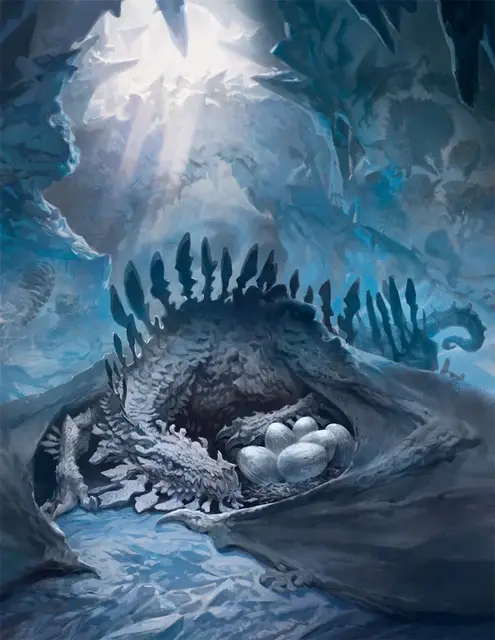

Древний лунный дракон
Ancient Lunar Dragon
Громадный Дракон, обычно нейтрально-злой

Класс Доспеха 18 (природный доспех)
Хиты 297 (17к20 + 119)
Скорость 40 футов, летая 80 футов, копая 20 футов
| мод | спас | ||
|---|---|---|---|
| СИЛ | 27 | +8 | +8 |
| ЛОВ | 12 | +1 | +1 |
| ТЕЛ | 24 | +7 | +13 |
| мод | спас | ||
|---|---|---|---|
| ИНТ | 12 | +1 | +1 |
| МДР | 15 | +2 | +8 |
| ХАР | 17 | +3 | +3 |
Навыки Восприятие +14, Скрытность +13
Иммунитет к урону холод
Чувства тёмное зрение 240 футов, пассивное Восприятие 24
Языки Драконий
Опасность 19 (22000 опыта)
Бонус мастерства +6
Особенности
Легендарное сопротивление (3/день). Если дракон провалит спасбросок, он может вместо этого сделать спасбросок успешным.
Прокладывание туннеля. Дракон может копать сквозь сплошной камень со скоростью копания, уменьшенной вдвое, оставляя за собой туннель диаметром 20 фт.
Необычная природа. Дракону не нужен воздух.
Действия
Мультиатака. Дракон совершает одну атаку Укусом и две Когтями.
Укус. . Рукопашная атака оружием: +14 к попаданию, досягаемость 15 фт., одна цель. Попадание: 15 (2к6+8) колющего урона плюс 7 (2к6) урона холодом.
Коготь. . Рукопашная атака оружием: +14 к попаданию, досягаемость 10 фт., одна цель. Попадание: 15 (2к6+8) рубящего урона.
Хвост. . Рукопашная атака оружием: +14 к попаданию, досягаемость 10 фт., одна цель. Попадание: 15 (2к6+8) дробящего урона.
Холодное дыхание (перезарядка 5–6). Дракон выдыхает волну ледяного воздуха 90-футовым конусом. Каждое существо в области конуса должно совершить спасбросок Телосложения Сл 21. При провале существо получает 36 (8к8) урона холодом и его скорость уменьшается до 0, до конца его следующего хода. В случае успеха существо получает половину этого урона и его скорость не уменьшается.
Бонусные действия
Фазовое состояние (3/день). Дракон становится частично бестелесным до тех пор, пока он сохраняет концентрацию на эффекте (как если бы он концентрировался на заклинании). Будучи частично бестелесным, дракон обладает сопротивлением дробящему, колющему и рубящему урону.
Легендарные действия
Дракон может совершить 3 легендарных действия, выбирая из представленных ниже вариантов. За один раз можно использовать только одно легендарное действие, и только в конце хода другого существа. Дракон восстанавливает использованные легендарные действия в начале своего хода.
Атака хвостом. Дракон совершает атаку Хвостом.
Предательский лёд. Магический лёд покрывает землю в радиусе 20 футов с центром в точке, которую дракон может видеть в пределах 120 футов от себя. Лёд является труднопроходимой местностью для всех существ, кроме лунных драконов, существует 10 минут или до тех пор, пока дракон снова не использует это легендарное действие.
Атака крыльями (стоит 2 действия). Дракон бьёт своими крыльями. Все существа в пределах 15 футов от дракона должны преуспеть в спасброске Ловкости Сл 21, иначе получат 12 (2к6 + 10) дробящего урона и будут сбиты с ног. После этого дракон может пролететь на расстояние, не превышающее половину скорости полёта не провоцируя атак.
Логово
Комплекс пещер, где лунный дракон устраивает свое логово, содержит достаточно места для еды, а также одну или несколько скрытых пещер, где дракон хранит свои сокровища. В зависимости от состава и особенностей луны, логово может содержать природные источники воды и тепла, дикие сады, кристаллические образования, магические явления или экосистему меньших форм жизни, которые приспособились к жизни с драконом.
Местные эффекты
Регион, в котором есть логово древнего лунного дракона, искажается драконьей магией, которая создаёт один или несколько следующих эффектов:
• Черный иней. Землю покрывает тонкий слой черного инея, который убивает все обычные растения, растущие в пределах 6 миль от логова, если дракон древний.
• Преследующий стон. Навязчивый звук становится громче или тише (выбор дракона) по мере приближения к логову. Стон слышен в пределах 6 миль от логова.
• Лунные дьяволы. Воронки из пыли и инея, известные как лунные дьяволы, кружатся в области в пределах 1 мили от логова, задерживая других существ, с которыми они сталкиваются. Лунный дьявол - это воздушный элементаль [air elemental] со свободной волей, наносящий урон холодом вместо дробящего урона.
Если дракон умирает, стоны прекращаются, лунные дьяволы рассеиваются, а черный иней исчезает в течение 1к10 дней, позволяя растительной жизни в этой области восстановиться.
Описание
Лунные драконы (также известные как драконы луны или фазовые драконы) - капризные, ксенофобные существа, которые устраивают свои логова внутри пустынных лун, прорывая норы в скалах.
Прежде чем отложить яйца, самка лунного дракона запасается пищей в своем логове; она не покинет логово снова, пока яйца не вылупятся и потомство не станет достаточно взрослым, чтобы заботиться о себе. Яйца лунного дракона имеют каменную скорлупу от бледно-белого до светло-серого цвета. Лунные драконы алебастрово-белые, когда вылупляются, и постепенно темнеют с возрастом. Древние лунные драконы обладают сланцевым цветом.
Лунным драконам больше нравится лишать других существ сокровищ, чем самим приобретать их. Часто среди сокровищ в сокровищнице лунного дракона можно найти один или несколько штурвалов чарохода [spelljamming helm], снятых с кораблей, которые осмелились вторгнуться на территорию дракона.
Лунный дракон может стать бестелесным, но не до такой степени, чтобы он мог проходить сквозь других существ или твердые объекты. В этом полубестелесном состоянии примерно половина тела дракона имеет темную, размытую призрачную форму